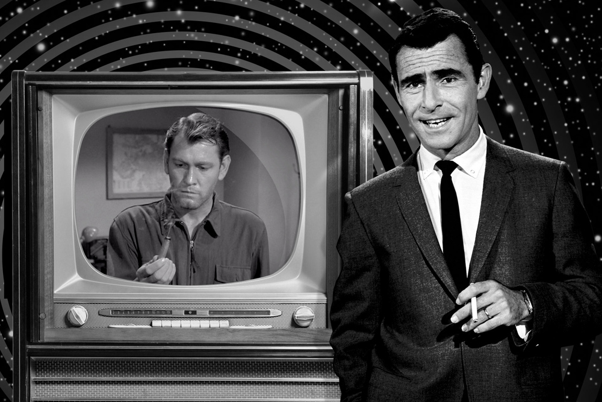
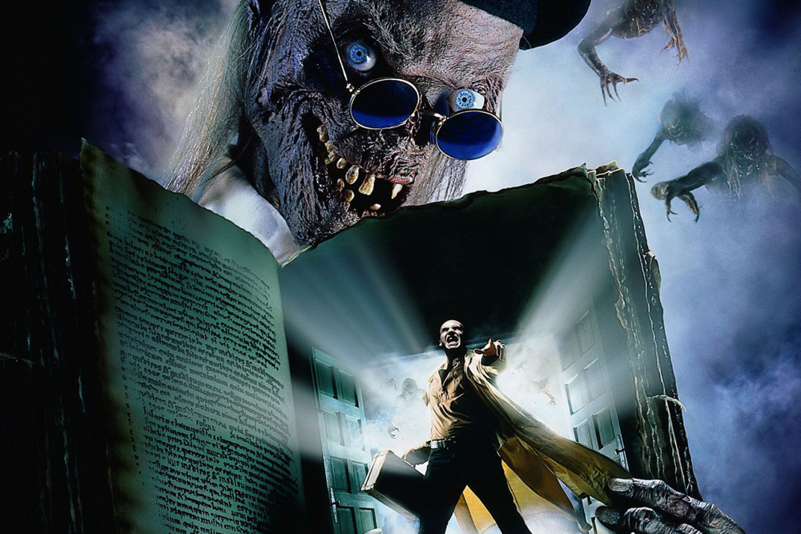
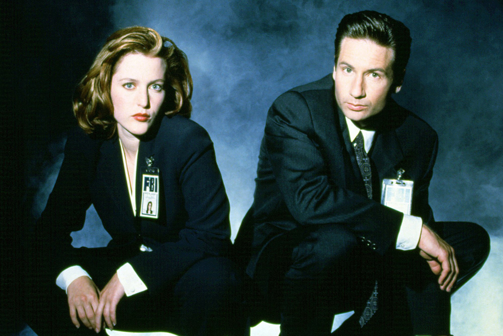
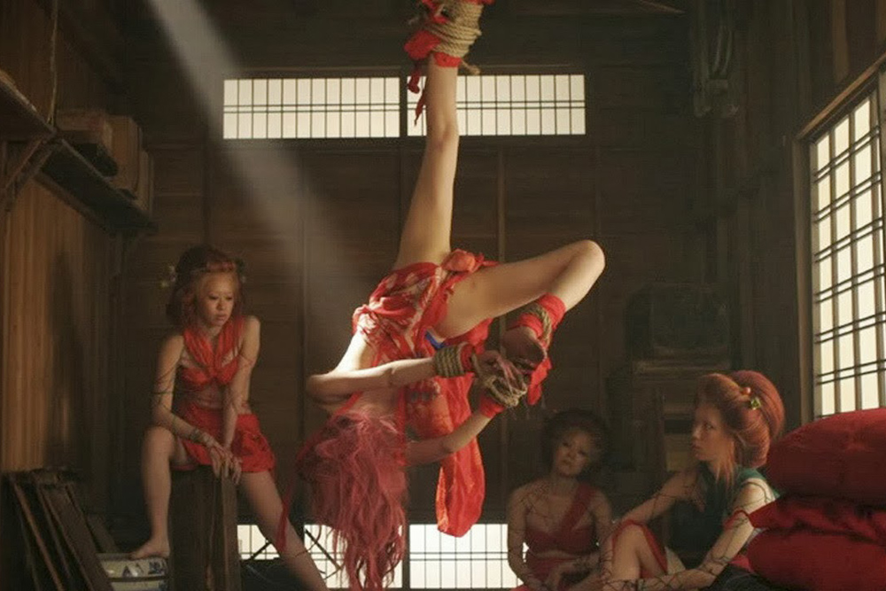
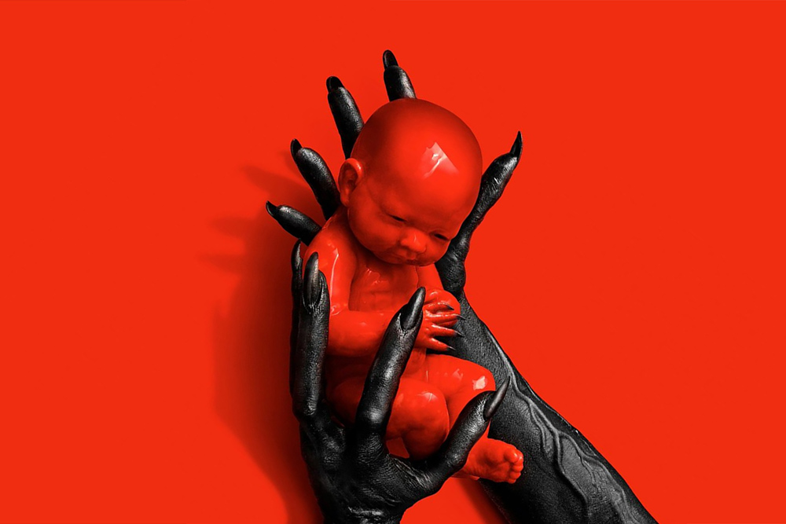

Представляем вашему вниманию подборку хоррор-сериалов.
Топ 5 лучших:

Режиссёры: Джон Брам, Дуглас Хэйс, Базз Кьюлик
В ролях: Род Серлинг, Роберт МакКорд, Джей Оверхолтс, Вон Тейлор, Джеймс Терли, Джек Клагмен,
Один из первопроходцев жанра на ТВ. Каждая серия «Сумеречной зоны» рассказывает мистическую или фантастическую историю. Большинство эпизодов написаны Родом Серлингом, он же выступил рассказчиком, который читает свои монологи перед каждым эпизодом. У сериала было несколько продолжений со схожей концепцией — в 1985 и 2002 году. Очередная реинкарнация «Сумеречной зоны» вышла в 2019 году — и новым рассказчиком выступил Джордан Пил.

Режиссёры: Рассел Малкэй, Эллиот Силверштейн, Роберт Земекис
В ролях: Джон Кассир, Рой Броксмит, Мигель Феррер, Кэм Кларк, Ларри Дрэйкbr>
Иронический наследник «Сумеречной зоны». Телевизионным «Байкам из склепа» предшествовали два полнометражных фильма из 70-х, но по-настоящему культовым стал именно сериал. Каждый эпизод представляет комичный Хранитель склепа, а его истории посвящены тому, как плохие люди расплачиваются за свои проступки. В списке режиссеров шоу отметились Роберт Земекис, Тоуб Хупер, Уильям Фридкин, а также, как ни странно, многие актеры, например, Арнольд Шварценеггер.

Режиссёры: Ким Мэннерс, Роб Боумен, Дэвид Наттер
В ролях: Джиллиан Андерсон, Дэвид Духовны
Агенты Малдер и Скалли расследует самые необъяснимые дела ФБР. На их пути попадаются в изобилии не только пришельцы и таинственный Курильщик, но и более привычная паранормальщина вроде оборотней, вампиров или мутантов из канализации. Одна из самых жутких серий находится в первом сезоне — зловещий монстр Юджин Тумс мог проникать в любое помещение через маленькие отверстия, изменяя форму своего тела..

Режиссёры: Стюарт Гордон, Дарио Ардженто, Джон Карпентер
В ролях: Карен Элизабет Остин, Дж. Уинстон Кэрролл, Михо Нинагава, Энтони Харрисон, Диего Мартинес-Тау
Хоррор-антология с простым, но действенным замыслом — взять ведущих жанровых режиссеров, поручить им бюджет в пару миллионов долларов и посмотреть, что из этого выйдет. Получилось кроваво, страшно и задорно. Среди режиссеров Джон Карпентер, Дарио Ардженто и Стюарт Гордон. Гримером во всех сериях выступил Грег Никотеро («Ходячие мертвецы»).

Режиссёры: Брэдли Букер, Альфонсо Гомес-Рехон, Майкл Аппендаль
В ролях:Джон Кэрролл Линч, Эмма Робертс, Лили Рэйб, Фрэнсис Конрой
Каждый сезон этого сериала рассказывает новую историю, которая основана на жанровых клише и стереотипных персонажах. Это могут быть вампиры, пришельцы или ведьмы, а действие может происходить в постапокалиптическом бункере, психушке или доме с привидениями. Отличительные особенности «Американской истории ужасов» — более-менее постоянный набор актеров, которые из сезона в сезон играют новые роли, и ироничная интонация шоураннеров Райана Мерфи и Брэда Фэлчака.